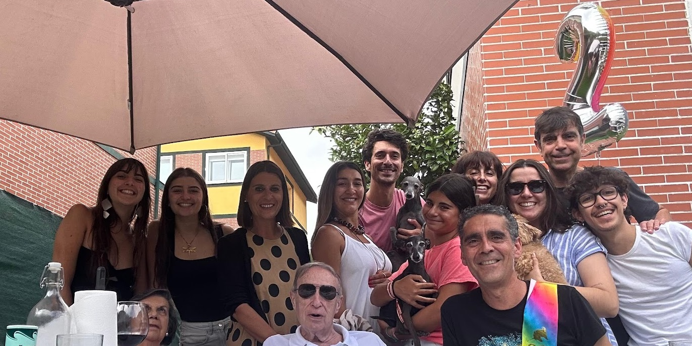

Kedamos ???

Qué son las quedadas,...
- Tiempo para pasarlo bien
- Espacio para comer y echar un rato agradable
- Cantar
- Bailar,...
- Emprender en el bertso
- Aprender a cocinar
Cómo solemos desorganizar, jejeje
- Se elige el tipo de jornada: Adultos o adultos + pekes.
- Elegimos fecha, hora y menú por consenso del grupo
- Se eligen responsables de la quedada
- Los responsables organizan el tema ( musika, dantza, musika+dantza,... )
- Siempre una sorpresa relacionada con el tema, suele ser alguien del mundillo,...que nos acompañará
- y a disfrutaaar !!!
Aquí tenéis un enlace wiki para saber que es disfrutar / enjoy / ondo pasa ,...
Visitar enlace Disfrutar